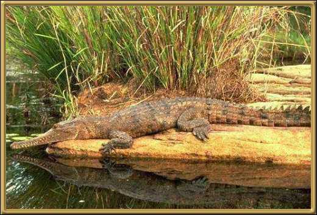

The freshwater Crocodile is, on the whole, considered to
be not harmful to people, although it will bite. It is smaller than the salt-water
crocodile, growing to lengths of 3 meters (10 feet) It is also one of the few crocodiles
that has developed the ability to gallop, reaching speeds of up to 18 kilometers an hour,
over short distances.
Photographer: Unknown